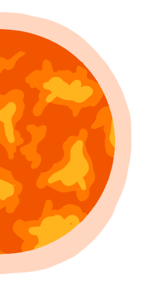
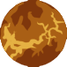
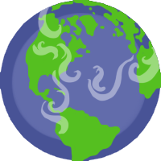
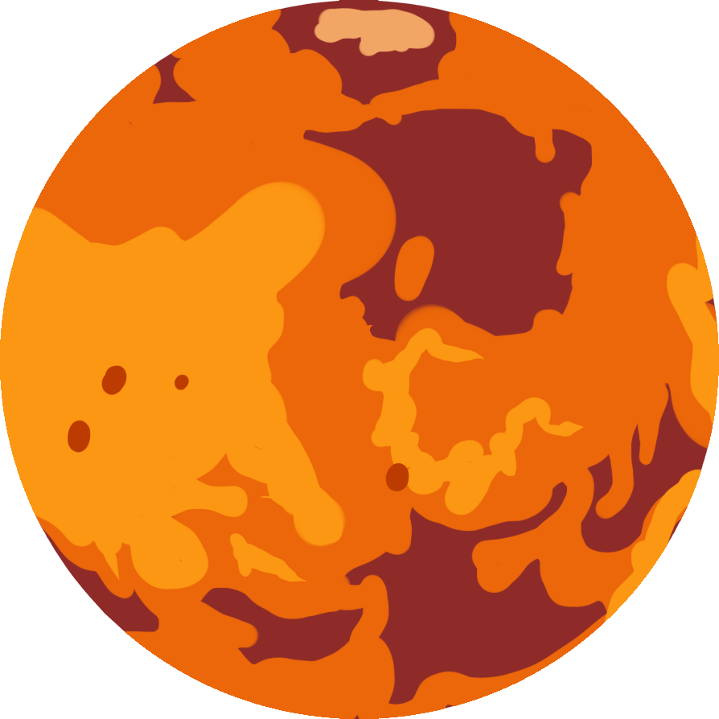
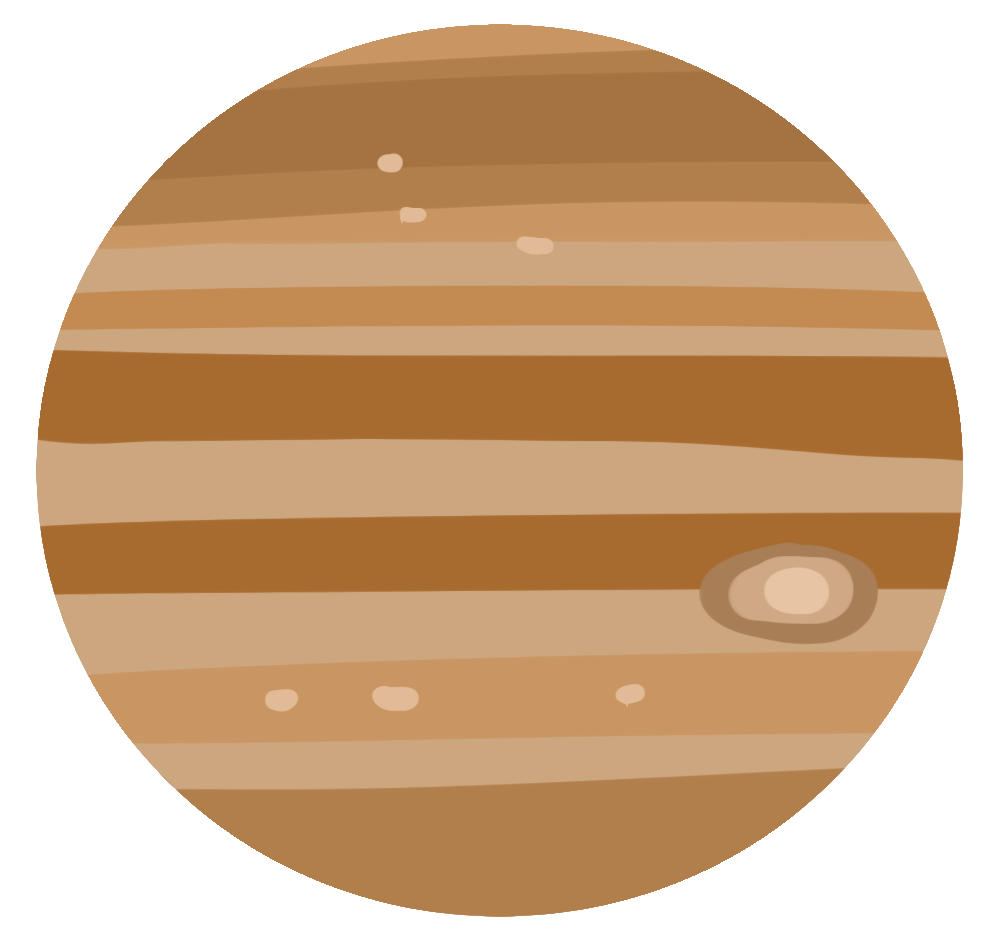
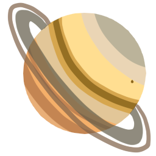
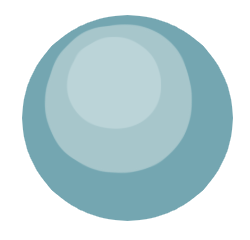
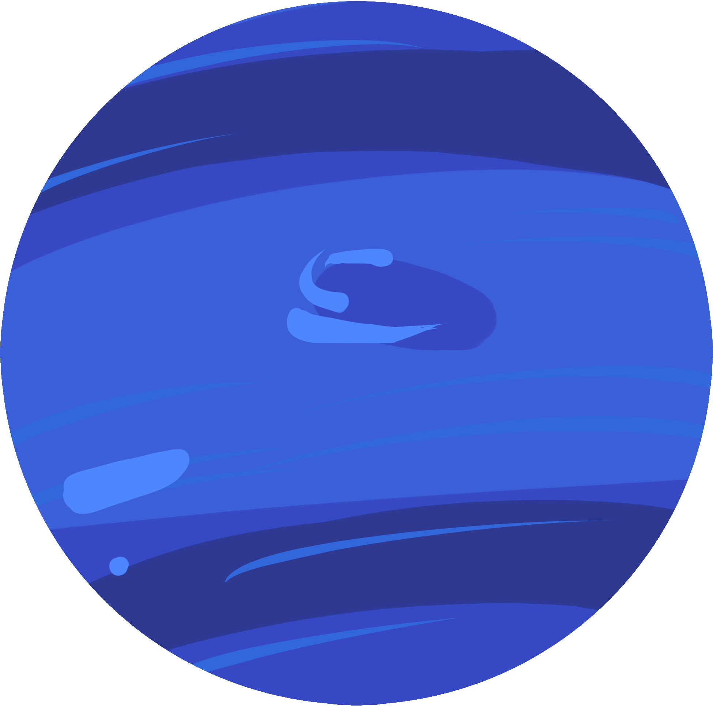
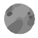

Sun
Diameter: 1,392,684 km Relative Size: 109 times larger than earth Fact: One million earths could fit inside our sun. The sun contains 99.86% of all the mass in our solar system. Although we perceive the sun as huge, our sun is average in every way- luminosity, size, age, and temperature.
Diameter: 4,879 km Relative Size: ⅓ size of earth Distance to Sun: 57.9 million km Fact: Although Mercury is the smallest planet in the entire solar system, it is the second densest planet. This is largely because it is made of heavy rocks and metals whereas planets like Jupiter and Saturn are largely made up of gas. Hence their name, “The Gas Giants.”
Mercury
Venus
Diameter: 12,104 km Relative Size: Earth is the same size as Earth. Distance to Sun: 108.2 million km Fact: Venus’ year is actually shorter than it’s day by 19 earth days. This is because it takes venus longer to make a full rotation than to orbit the sun.
Earth
Diameter: 12,756 km Distance to Sun: 149.6 million km Fact: Earth is the only KNOWN planet to have living beings on it. The largest living thing was a mushroom fungus in Oregon that grew to over 2200 acres!
Mars
Diameter: 6,794 km Relative Size: ½ size of earth Distance to Sun: 227.9 million km Fact: Like the desert on Earth, Mars has dust storms. Unlike the deserts on Earth, the dust storms can last for months at a time and are an extreme weather occurance that happen due to the length of mars’ year. Mars’ year is 687 earth days long!
Jupiter
Diameter: 142,984 Relative Size: 11 times larger than earth Distance to Sun: 778.4 million km Fact: Jupiter’s year is equal to 11.7 earth years! A planet’s year is calculated by the amount of time it takes for the planet to complete its orbit around the sun.
Saturn
Diameter: 120,536 Relative Size: 9.5 times larger than earth Distance to Sun: 1,426 million km Fact: Saturn is less dense than liquid water, which means that if there was a body of water large enough to put saturn in, it would float! That body of water would be hard to find though, considering Saturn is almost 10 times larger than earth.
Uranus
Diameter: 51,118 Relative Size: 4 times larger than earth Distance to Sun: 2,871 million km Fact: Uranus is a very interesting part of the solar system. It is often described that Uranus “goes around the sun on its side” because the planet is tilted 98 degrees on it’s axis. Another fun fact about Uranus is that it could not be seen by the naked eye. It was the first planet to be discovered using a telescope in 1781 by Sir William Herschel.
Neptune
Pluto
Diameter: 2,270 km Relative Size: ⅕ size of earth Distance to Sun: 7376 million km Fact: Pluto is not a planet! It is a dwarf planet. This classification is due to it’s size and it’s inability to move things out of it’s path.